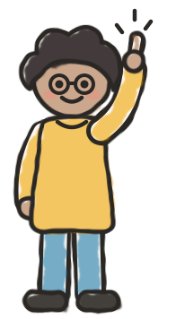
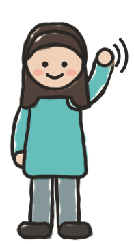
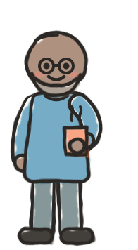
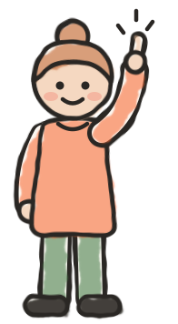
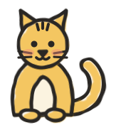
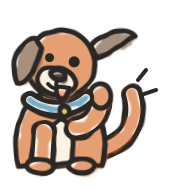
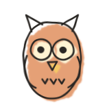
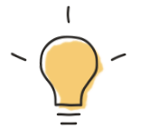

SKETCHBOOK KIT
Reusable pieces for slides and static web content in the style of the “learn anything” lightning-lesson slides. Every piece is plain HTML, CSS or SVG.
Add sketchbook.css and sketchbook.js to a page, then paste in any chunk. Drop the icons and characters in as images anywhere.
Example: a whole slide built only from kit pieces
Copy the code
<div class="sk-slide sk-paper"><div class="sk-slide-body">
<h1 class="sk-title" style="font-size:2.7em"><span class="sk-burst"><span class="sk-hl">How to get the agent</span><br><span class="sk-hl">to teach you anything</span></span></h1>
<h2 class="sk-section" style="font-size:1.7em;margin:.4em 0 .5em">The learning loop</h2>
<div class="sk-row" style="font-size:.78em">
<div class="sk-panel sk-mustard">
<div class="sk-step"><span class="sk-num">1</span><span class="sk-label">Add sources</span></div>
<img src="icons/books.svg" alt="">
<p>books, manuals, transcripts, code</p>
</div>
<svg class="sk-arrow" viewBox="0 0 40 20" aria-hidden="true"><line x1="4" y1="10" x2="30" y2="10" stroke="#36545C" stroke-width="4" stroke-linecap="round" marker-end="url(#sk-head)" filter="url(#sk-wobble-line)"/></svg>
<div class="sk-panel sk-teal">
<div class="sk-step"><span class="sk-num">2</span><span class="sk-label">Filter + focus</span></div>
<img src="icons/magnifier.svg" alt="">
<p>use a lens: <span class="sk-em">“what do I care about?”</span></p>
</div>
<svg class="sk-arrow" viewBox="0 0 40 20" aria-hidden="true"><line x1="4" y1="10" x2="30" y2="10" stroke="#36545C" stroke-width="4" stroke-linecap="round" marker-end="url(#sk-head)" filter="url(#sk-wobble-line)"/></svg>
<div class="sk-panel sk-forest sk-dashed">
<div class="sk-step"><span class="sk-num">3</span><span class="sk-label">Create new source</span></div>
<img src="icons/page-pencil.svg" alt="">
<p>pull out just the parts that matter</p>
</div>
<svg class="sk-arrow" viewBox="0 0 40 20" aria-hidden="true"><line x1="4" y1="10" x2="30" y2="10" stroke="#36545C" stroke-width="4" stroke-linecap="round" marker-end="url(#sk-head)" filter="url(#sk-wobble-line)"/></svg>
<div class="sk-panel sk-coral">
<div class="sk-step"><span class="sk-num">4</span><span class="sk-label">Create a projection</span></div>
<img src="icons/headphones.svg" alt="">
<p>audio summary, infographic, quiz</p>
</div>
<svg class="sk-arrow" viewBox="0 0 40 20" aria-hidden="true"><line x1="4" y1="10" x2="30" y2="10" stroke="#36545C" stroke-width="4" stroke-linecap="round" marker-end="url(#sk-head)" filter="url(#sk-wobble-line)"/></svg>
<div class="sk-panel sk-blue">
<div class="sk-step"><span class="sk-num">5</span><span class="sk-label">Validate + iterate</span></div>
<img src="icons/checklist.svg" alt="">
<p>teach back, quiz me, spaced repetition</p>
</div>
</div>
<div style="margin:0 7% 0 7%"><svg class="sk-loop" viewBox="0 0 1000 70" aria-hidden="true"><path d="M960 6 C 950 50, 820 54, 500 54 C 180 54, 50 50, 40 8" fill="none" stroke="#1F78A8" stroke-width="5" stroke-linecap="round" marker-end="url(#sk-head)" filter="url(#sk-wobble-soft)"/></svg></div>
<div style="display:flex;align-items:center;justify-content:center;gap:1.5em;margin-top:-.6em">
<div class="sk-ribbon" style="font-size:1.3em"><img src="icons/car.svg" alt=""><span class="sk-kicker">Insight:</span> “I want to learn a book while driving.”</div>
<img src="characters/learner.svg" alt="" style="height:6.2em;margin-top:-1.5em">
</div>
</div></div>Chunks
Title on highlighter
Big marker caps on a yellow highlighter swash. Wrap each line's words in .sk-hl; add .sk-burst for the tick marks.
How to get the agent
to teach you anything
Copy the code
<h1 class="sk-title"><span class="sk-burst"><span class="sk-hl">How to get the agent</span><br><span class="sk-hl">to teach you anything</span></span></h1>Section heading
Label caps in deep teal with a rule either side.
The learning loop
Copy the code
<h2 class="sk-section">The learning loop</h2>Step panel
A numbered step in one of the five main colours. Add .sk-dashed for a dotted outline, to highlight the step you're talking about. Use .sk-em for accent text.
use a lens: “what do I care about?”
pull out just the parts that matter
Copy the code
<div class="sk-row">
<div class="sk-panel sk-teal">
<div class="sk-step"><span class="sk-num">2</span><span class="sk-label">Filter + focus</span></div>
<img src="icons/magnifier.svg" alt="">
<p>use a lens: <span class="sk-em">“what do I care about?”</span></p>
</div>
<div class="sk-panel sk-forest sk-dashed">
<div class="sk-step"><span class="sk-num">3</span><span class="sk-label">Create new source</span></div>
<img src="icons/page-pencil.svg" alt="">
<p>pull out just the parts that matter</p>
</div>
</div>Speech bubble
Something a person says or asks. Add .sk-tail-right to move the tail to the right.
Copy the code
<div class="sk-bubble">“I want to learn <span class="sk-em">Chapter 1 of Shape Up</span>, while I’m driving.”</div>Ribbon banner
An insight or takeaway. The kicker word goes in .sk-kicker, and an icon is optional.
Copy the code
<div class="sk-ribbon"><img src="icons/car.svg" alt=""><span class="sk-kicker">Insight:</span> “I want to learn a book while driving.”</div>Arrows
A short slate connector between steps, and the blue loop-back arrow that sits under a row of panels.
Copy the code
<svg class="sk-arrow" viewBox="0 0 40 20" aria-hidden="true"><line x1="4" y1="10" x2="30" y2="10" stroke="#36545C" stroke-width="4" stroke-linecap="round" marker-end="url(#sk-head)" filter="url(#sk-wobble-line)"/></svg>
<svg class="sk-loop" viewBox="0 0 1000 70" aria-hidden="true"><path d="M960 6 C 950 50, 820 54, 500 54 C 180 54, 50 50, 40 8" fill="none" stroke="#1F78A8" stroke-width="5" stroke-linecap="round" marker-end="url(#sk-head)" filter="url(#sk-wobble-soft)"/></svg>Characters
characters/learner.svg
characters/explainer.svg
characters/waver.svg
characters/coffee.svg
characters/pointer.svg
characters/cat.svg
characters/dog.svg
characters/group.svgDoodle icons
One colour for simple objects; up to three when the object has distinct parts. Always from the palette.
Brand words
icons/mug.svgicons/kite.svg
icons/owl.svgLearning
icons/books.svgicons/page-pencil.svgicons/magnifier.svg
icons/lightbulb.svgicons/checklist.svgicons/headphones.svgWorking together
icons/chat.svgicons/puzzle.svgicons/sticky-note.svgicons/compass.svgTech & systems
icons/laptop.svgicons/robot.svgicons/gear.svgicons/sprout.svgicons/car.svgTokens: colours (CSS variables in sketchbook.css; also tokens.json)
Tokens: type
--sk-font-title--sk-font-label--sk-font-body